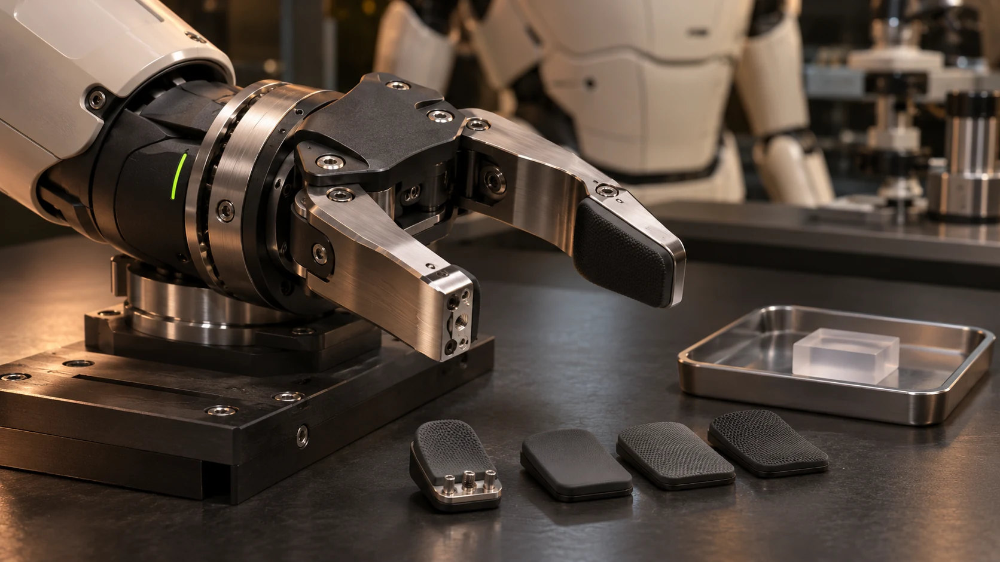

Record the contact surface as part of the robot configuration. A successful grasp is evidence about a particular object, fingertip and operating condition, rather than a permanent property of the gripper.
A humanoid can use the same wrist, controller and grasp program on two apparently similar objects and produce very different results. The overlooked component may be the small surface between finger and object. Its shape, condition and mounting arrangement deserve a configuration record just as much as the larger mechanism. This guide starts after an end effector has been selected. It proposes a practical way to compare and maintain fingertip contact surfaces, rather than choosing between a dexterous hand and a simple gripper. It does not report a hardware test or establish an approved accessory combination for any humanoid.
Name the contact configuration precisely
Give each proposed fingertip arrangement an identifier before collecting results. Record the gripper model and revision, finger carrier, pad or insert, mounting arrangement and relevant supplier drawing. Photograph the installed contact surface from angles that make its shape understandable. A material description alone is incomplete: the same nominal material can appear in different profiles, thicknesses and mounting configurations.
Separate supplier-provided parts from anything fabricated by the integration team. Keep a drawing revision or fabrication reference for a custom insert, and identify who accepts that design for the selected mechanism. This is especially useful when a pad looks interchangeable but changes where the object touches the finger. The record should let another person recreate the arrangement without guessing from a successful demonstration photograph.
Review geometry before treating material as the answer
Ask where the intended contact occurs and how that location changes through the required motion. Sketch the object and contact regions beside the fingertip profile. Check that the proposed arrangement can reach the intended object surfaces without relying on an undocumented collision or a finger closing farther than the application expects. The responsible integrator should review the complete configuration, including any offset introduced by an added pad.
Robotiq's official custom-fingertip guidance describes mounting details, mechanical limits and clearance considerations for particular Hand-E and 2F models. SCHUNK's FGR configurator similarly exposes finger geometry, gripping position and material choices for its supported configurations. These are useful supplier discussion tools. Neither source establishes that a custom contact part is suitable for a different gripper or a humanoid wrist, and their model-specific dimensions should remain attached to the product documentation.
Describe the surface condition of the object as well
A comparison needs an object condition that can be explained. Identify the actual samples, the permitted contact regions and the surface state presented to the robot. Note whether a label, protective film or visible residue is present. Keep preparation methods consistent with the object's intended use and with supplier instructions. Do not silently clean or replace only the samples that were difficult to grasp.
Choose a small representative set that exposes the contact question being investigated. A smooth rigid cylinder, a textured component and a deformable package might present different questions, but those examples are not universal benchmarks. Explain why the selected samples belong to the intended application. If the team changes an object's coating, packaging or supplier later, that change should trigger a review of whether the earlier contact evidence still applies.

Change one contact variable in a documented comparison
Write the comparison before making the first change. State which fingertip arrangement is the baseline and which feature differs in the candidate. Keep the relevant robot program, object presentation and application conditions recorded with each run. If geometry and contact material both change, describe the result as a comparison between complete configurations rather than attributing the outcome to one surface property.
Agree with the integrator on the supported commissioning conditions and the observations to collect. Record each attempt, the configuration identifier and any intervention needed to restore the setup. Include a view that reveals movement at the contact boundary when practical. The purpose is to make an observed slip, unexpected object rotation or incomplete release interpretable. Avoid introducing a universal success threshold or force setting that has no basis in the selected hardware and task.
Make pad replacement a controlled event
Decide what observations call for inspection of the contact parts and who is responsible for that decision. Keep photographs of the accepted baseline and record visible wear, loose components or changes in the contact profile when they are found. A replacement that restores the original appearance may still need confirmation that the installed arrangement matches the recorded configuration.
Use the procedure for the exact gripper and revision when changing parts. Robotiq publishes a separate replacement guide for its V4 2F fingers, illustrating why a generic instruction such as 'swap the finger' is insufficient. This article does not reproduce a mounting or tightening procedure. After an authorized change, record the installed part reference and complete the supplier's required checks together with the agreed application comparison. Preserve the previous configuration record instead of editing away its history.
Include the contact parts in the purchasing handoff
Ask a prospective supplier for the parts, drawings and support information needed to reproduce the proposed contact arrangement. Clarify whether a quoted package includes the carrier, contact insert, fasteners and any required adaptation, without assuming that a product photograph defines the delivered contents. Keep questions about replacement parts separate from an unverified claim of current stock or delivery time.
The useful result is a small evidence package: the configuration identifier, approved drawings, object descriptions, comparison records and maintenance history. It should explain what was observed and under which conditions. A future fingertip revision can then be evaluated against that baseline. This makes the contact surface a maintainable component of the humanoid application and gives purchasing, engineering and the supplier a shared description of what must be supplied again.
Your next step.
- Identify the fingertip, carrier, drawing revision and mounting configuration.
- Record object surface condition and permitted contact regions.
- Compare complete configurations under documented conditions.
- Record pad changes and repeat the agreed checks.
- Confirm package contents and replacement references with the supplier.
Sources & further reading
Primary sources and manufacturer documentation for the examples and further investigation. Recommendations in this article are HUMANOID’s editorial guidance.
Robotiq: custom fingertip design guidance ↗Robotiq: V4 2F finger replacement guidance ↗SCHUNK: FGR gripper finger configurator ↗Prepared and references reviewed: 10 November 2026. This original practical guide does not report an independent hardware test. Use the supplier documentation for the exact product and revision; accessory compatibility and purchase terms require confirmation.